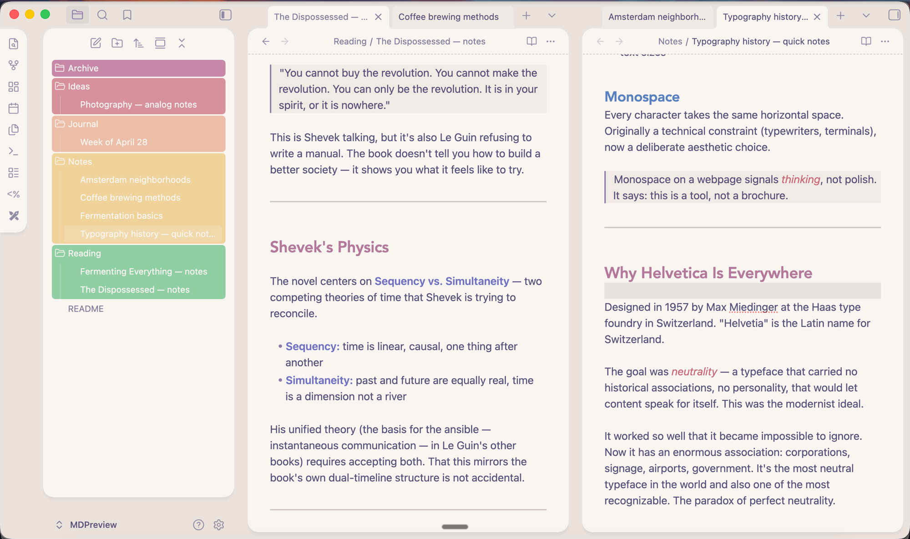

Open any Markdown file
in Obsidian.
No vault required. Your theme, your fonts, your rendering — instantly.
$ open -a MDPreview README.md
No vault required. Your theme, your fonts, your rendering — instantly.

macOS · Requires Obsidian